流畅对话
消息气泡、流式接收、重新生成、停止生成、消息分叉与多选，对话体验顺滑自然。
截图来自本地模式演示数据，左右滑动查看更多界面
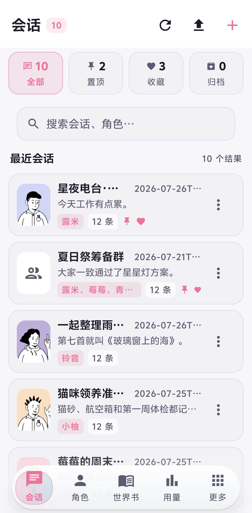
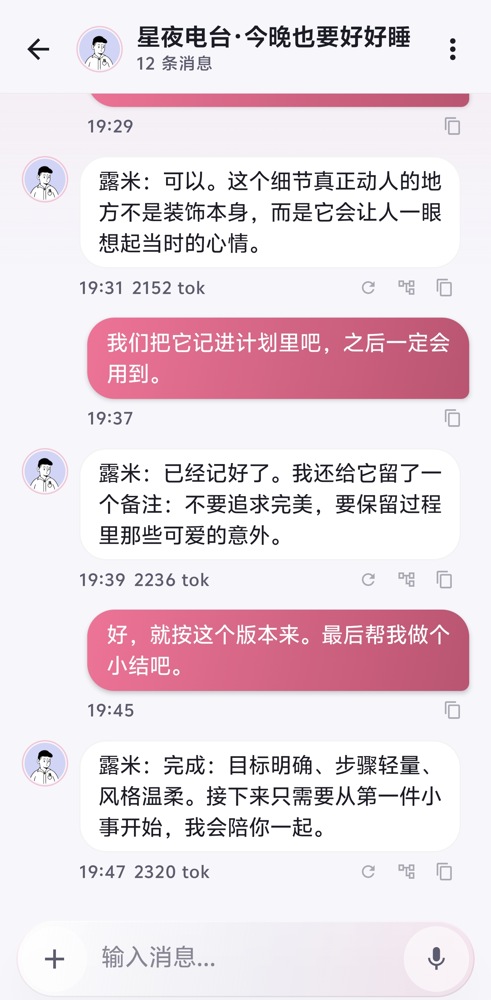
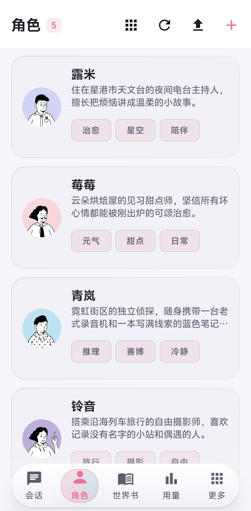
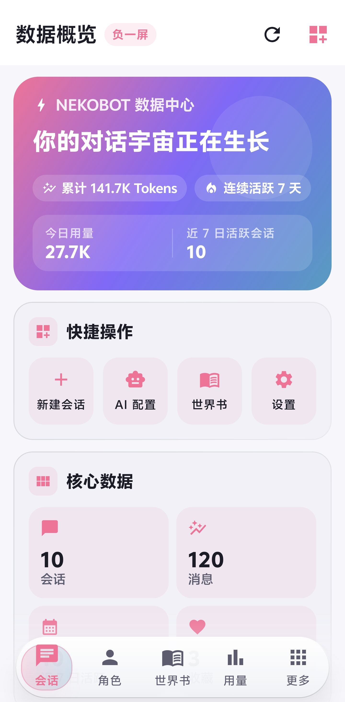
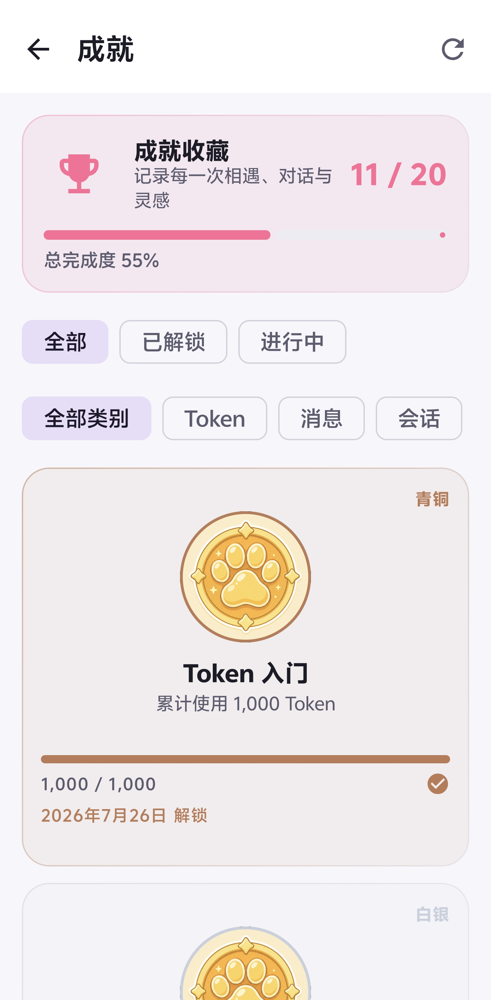
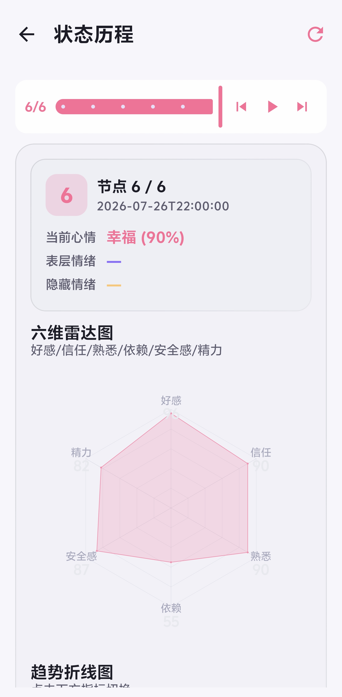
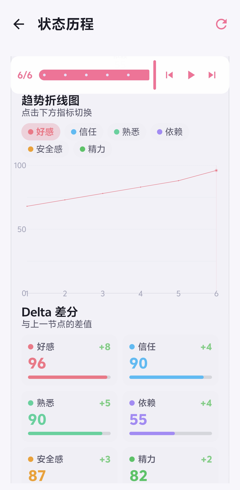
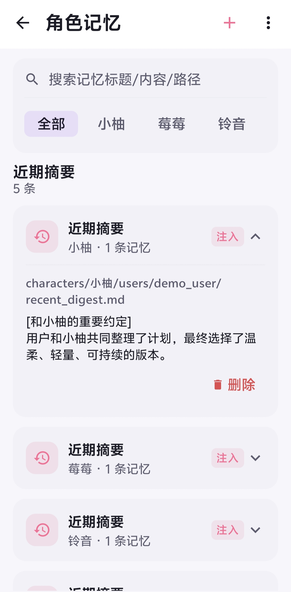
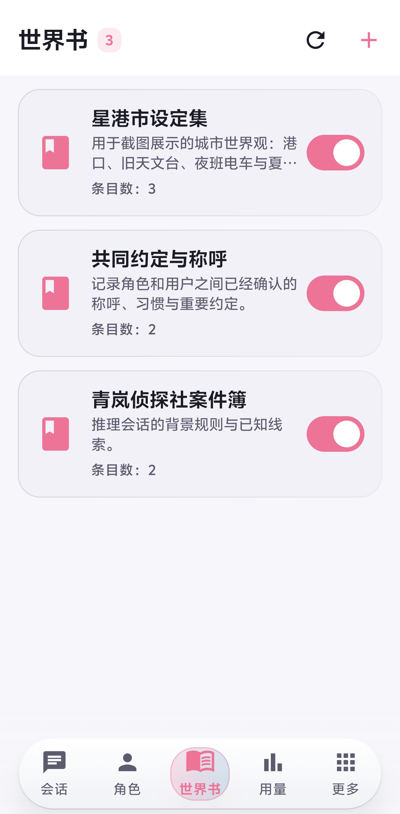
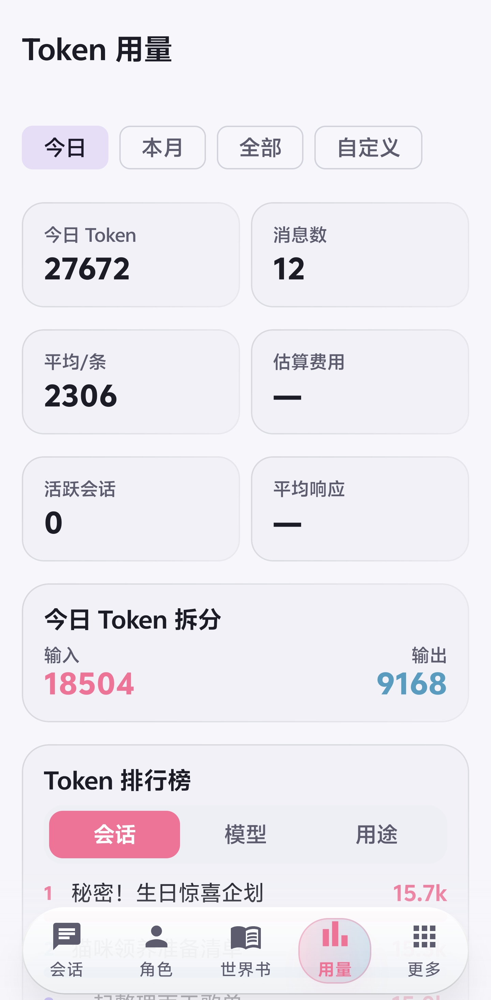
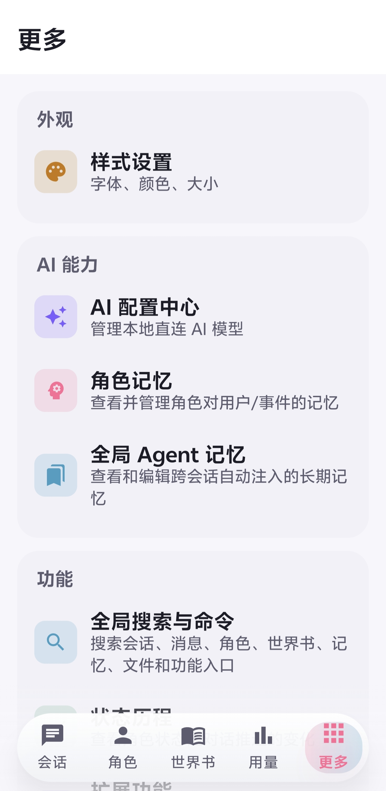
从角色扮演到剧情分支，从记忆到统计，一应俱全
消息气泡、流式接收、重新生成、停止生成、消息分叉与多选，对话体验顺滑自然。
描述、人格、首条消息、场景、对话示例、立绘与标签，完整字段编辑，支持导入。
Canvas 树状布局呈现剧情分支，随时选择分支、回滚或重生，走向由你决定。
邀请多个角色加入同一会话，5 种发言策略智能调度，每个角色只演自己。
关键词、常驻、位置与优先级条目管理，多角色绑定，让世界设定始终在线。
角色记忆查看与编辑、记忆抽取、关系六维与状态评估，TA 会记得你们的故事。
浏览网页、运行 Linux、处理文件并调用 Skills 与 MCP，进度卡片实时展示每一步。
8 种内置动作、11 种条件字段与 5 个开箱即用模板，让角色状态随对话自动演变。
7 阶段昼夜节律 + 6 级时间差感知 + 静默心跳生活模拟，让角色真的在"活着"。
无论你有没有自己的服务器，Nekobot 都能陪伴你
连接 NekoBot Web 后端，通过 REST + Socket.IO 实时流式推送，体验完整功能。
直连任意 OpenAI 兼容 API，数据全部保存在本地 Room 数据库，隐私安心。
从对话、群聊到故事与记忆，看看角色模式的完整体验
流式输出配上玻璃拟态气泡，括号内独白自动折叠成斜体小字。支持消息分叉，尝试不同的回应方向；长按多选，整理对话像整理贴纸一样简单。
温柔、爱操心、偶尔撒娇，喜欢收集对方的日常碎片。
"欢迎回家～今天也想听听你的声音呢。"
完整角色卡字段编辑，加上关系六维与状态评估，角色的情绪会随对话流动。支持立绘与标签，还能一键导入喜欢的角色。
邀请多个 AI 角色加入同一个会话，模拟真实群聊氛围。5 种发言策略：轮流发言让每个人依次表态、@提及点名指定角色回应、智能推荐按消息相关度自动选人、世界引擎综合关系亲密度调度、随机增加戏剧性。每个角色只演自己，严禁代演别人，需要互动就用 @。
剧情以树状图铺展开来，点选任意分支即可回到那个瞬间重新选择。分支、回滚、重生全部本地持久化，再也不怕选错。
今日、本月、累计用量与费用统计，按日期分组，还有会话、模型与用户排行。故障转移队列和性能指标也一并呈现。
角色记忆查看与编辑、自动记忆抽取、六维关系（亲密度 / 信任 / 熟悉度 / 依赖 / 安全感 / 嫉妒）与状态评估。每轮对话后自动写入状态快照，可在「状态历程」页面回放情绪与关系的演变曲线。
7 类用途独立故障转移队列：chat / vision / video / tts / stt / embedding / image_generation。P0 主模型故障时自动切换 P1 / P2 备用，日 / 周 token 限额超限自动跳过，连续失败进入冷却期。状态码感知的退避策略，429 / 500 都有不同的处理。
不只回答问题，还能浏览、执行、观察并持续完成多步骤任务
模型可以先读取网页源码与链接，再打开可视页面确认结果，随后进入 Linux 沙箱处理文件。所有步骤都回到同一张进度卡片，浏览器和终端也能随时由你接管。
多标签、点击输入、DOM 源码、结构化 URL、Cookie 登录态请求与长页面滚动采集。
聊天页实时观察当前网页，支持全屏放大；AI 可截图并调用视觉模型识别图片和图表。
内置 Alpine 环境，可安装软件、运行脚本和后台服务；覆盖升级 APK 后继续保留数据。
从右上角菜单进入全屏终端，直接接管当前会话命令行；每个会话使用独立工作区。
读取、写入和精确编辑文件，理解本地图片，并组合已启用 Skills 与外部 MCP 工具。
进度卡片保留展开状态；高风险操作需要确认，参数错误和无进展循环会被自动拦截。
这些细节，让 Nekobot 更像一个完整的伙伴
双协议 STT：OpenAI 兼容 + 小米 MiMo 原生，6 种音频格式自动转码。
标准 WebDAV 协议，端到端加密，可选包含头像图片，一键测试连接。
完整 MCP 2025-11-25 协议支持，stdio + Streamable HTTP 双传输。
4 种 URL 一键安装技能，工作流支持 AI 自然语言生成配置。
35 个 db_ 工具覆盖 8 大资源类型，AI 可自主管理本地数据库。
内心独白自动折叠、代码块带语言标签、表格横向滚动、全角括号斜体。
5 语言支持 + Material You 动态取色，自定义主题色与字体上传。
GitHub Releases 自动检查，语义化版本比较，下载进度实时反馈。
Nekobot 的成长记录
xiaomi 或 mimo，会自动走 MiMo API（端点 /v1/chat/completions，认证头 api-key）。录音非 wav 时（m4a / aac / webm / ogg / flac）会用原生 MediaCodec 转码为 16kHz 单声道 WAV，APK 体积零增加。STT 模型也走故障转移队列。